6 Wicklow Head
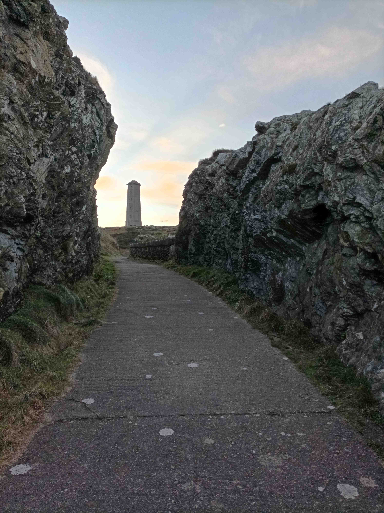
0904, Monday, Jan 16, 2023
It’s Martin Luther King Day and, because I work for an American company, I’m offski for the Doris so it’s a good chance to take in a lighthouse. These American Bank Holidays might be unpaid but they are a special kind of me-time you don’t normally get as a nine-to-five drone, because normally when office workers are off, so are the kids and everyone else. So I cycle to school with the young lad running beside me, and then I’m free to ramble, as long as the roads aren’t too icy. The problem is that it’s proper cold for Ireland, only zero or one degree this morning, rising to just three degrees by midday. I suspect that it’ll be a smidge colder up the Wicklow Mountains. I’m heading to Wicklow Head today, 56k south of Dublin city, and nearly 70k from Blanch. I could buzz into town and take the flattish route via Bray, or I could take the fun route over the Dublin slash Wicklow mountains. The problem is that if it’s a bit icy here, it’s gonna be an ice rink up there.
I’m gaggo to go over these mountains because I love it up there and it’s the only chance I’ll have to write about them in this book. My guess is that it’ll be icier on the Dublin, aka north?, side of the mountains, and that once I get over the first big peak the sun will be melting any ice on the other side. But I’ll have to take it very easy on the descents, which doesn’t bother me cos I’m way to scared to push it at the best of times. Normally I wouldn’t risk it, but I have work to do today, getting to this lighthouse and taking in the mountains, so I’m pretending to myself that it’s all ok, even though I know that ice and heavy wind are legit reasons to stay off the bike, unlike rain and a cold breeze. It was only afterwards that I found out there was a status yellow ice warning overnight, with special mention of the Sally Gap, although they were expecting it to pass by noon.
6.1 Getting to the mountains
Getting to the mountains from Blanch is a pain in the gulags and it’s yet another reason why I miss living in town. From the city centre, you can warm up on your way to the mountains, take in a good climb and then roll home, all within two hours, and quicker if you’re pushing it. I make my way across the back roads to Chapelizard and then up the steep hill to Ballyfermot. I spent a year doing this route, between the bike and the car, lugging my son in the morning to a really great creche slash naíonra called Teanga Beo, where the kids could buzz about inside a sea of love. I miss Ballyfermot. It’s a survivor from pre-Celtic Tiger Ireland with a proper community and there’s a buzz in the village.. We lived in nearby Kilmainham before the landlady decided to flog the gaff and the housing crisis forced us to emigrate to Blanch where we know no one. So for twelve months we back-and-forthed every day, with me dropping the young lad off and my wife picking him up on the bus on her way home from town. It was a lot of travel but at least we kept some stability in his life while his early childhood was being ruptured by this country’s failure to provide access to homes for enough people. We’ll be moving again no doubt, once we have saved up a deposit to buy our own home, another sub-scandal in itself, and a big part of today’s trip is to check out gaffs in South Wicklow which we might be able to afford.
I misjudge the diagonalization from Ballyfermot to Rathfarnham and Google maps wants me to do a weavearooney through a heap of underfamiliar spots but I’m not in explorer mode yet, so I cut back across from the Walkinstown Roundabout towards Terenure, past a whopper session gaff I used to live in, back in the late Celtic Tiger era. There was always an energy in the gaff and everyone was always doing something. Johnny Rayge and Uncle Steve were in a band called ITO and they’d play covers in The Mezz every Saturday night . Imogen was a photographer. I was trying to write about the letters of the alphabet. JJ was a street performer and used to dress up as a skeleton and scare drunk people for money in Temple Bar. And everyone’s mates and mates’ mates would just knock about. I first started cycling back then, in and out of town, as we all did, cos the bus out there was and still is a jake, although 5k seemed like an unbearable distance on the tiny incline home. What hasn’t changed, however, is the difficulty of negotiating the traffic at the otherwise understated village at Terenure Cross. Thence, it’s a straight shot up to the mountains.
But before I start climbing I have to stop off in a chemist to get an emergency ventolin inhaler because my lungs struggle when the temperature drops this low – I’d say it’s still only two degrees now. The pharmacist takes forever, like a solid twenty minutes for one item. I can never understand why pharmaceutical companies can put so much ingenuity into creating miracle medicines yet no one has worked out a way to dispense tablets quickly. Surely the back of the pharmacy should just be one big vending machine, supervised by a pharmacist who can talk to the customer. Instead, they piss away their time and yours by counting beans in the back while front of house is occupied by non-specialists who either don’t know anything or aren’t allowed to discuss it with you.
6.2 Rising slowly
After Terenure, it’s Rathfarnham Castle, which could be a cardboard cutout for all I’ve ever seen of it, and then a brief urban-to-rural continuum as the road rises slowly. Once I go under the M50 the gradient increases, 2, 3, 4, 5 per cent up to the Merry Ploughboy before cresting briefly, and it’s a good chance to get a feel for where the lungs are at. To feel your first wind. I think I finally understand the concept of a second wind. When a game starts, you run round headlessly and get out of breath because you haven’t yet matched the pace of the game to your fitness, but once you find your own level, then that’s your second wind, an acceptable level of exertion which you can maintain. Once the road rises from the interlude valley, I need to find my second wind because it’s 6% for about 3.5k from here to the turn for Johnny Fox’s, with a good stint at 8-10%. It’s no rampa inhumana, but it’s the hill against which I have learnt to measure my lungs, my legs and my mental state. Today is mostly about leg strength cos Yvonne is a city bike built for flat terrain.
Every time I come here I have to go to the well a little bit, just to keep my legs grinding. Thinking of the late Eamonn Donoghue got me up here once, and he’d’ve been forty in November, God rest his young soul. My mam’s illness in 2014 too. And more prosaic difficulties in my own life. Getting through the PhD and my troubles with the booze. Little issues at home. Whatever is really wrong in my life will always come to me in the depths of this particular struggle. Suddenly I’m thinking about that other concern I have and so I just breathe and cycle, breathe and cycle. Yet I realize that when that problem is gone, everything else in my life is now in a good place. We’ve got a baby on the way in a few weeks, and my wife is healthy and our son is well, and our relationship is good. My mam and dad are good and I am satisfied inside myself. Between the bike and the writing, the hole in my soul is filled, and for once I can’t hear a scream, but a contented fulfilment. Nothing aches inside me and I smile ear to ear as the gradient keeps on giving. You think you are there but there’s a blind bend and another steep rise, but it’s all good. After the junction, the incline flattens out and there’s a handy 3k to go before the Killakee viewing point, although there’s a spot you always think is the resting point, and it’s not. Mind you, a dog runs out after me, quicker than his owner can call him back, and it’s great encouragement to keep going. There’s always more in your legs than your mind wants to admit.
I stall the ball at the Viewing Point although I don’t find that it’s a view which improves with repetition. Maybe I should come here with my full-strength glasses, as my prescription shades are a notch or two weaker than my latest specs. Inland from the beautiful coast, Dublin just looks like a flat sprawl with few notable landmarks or patterns. Even the river is too narrow to show up the Dubberlin Wall, the supposably great divide, and the sprawling low-rises expand both North and West. Relief only comes here in the south and you can see how these hills have acted as a natural barrier to expansion. I was here once with the above-mentioned Johnny Rayge and the landscape helped him to reimagine the Vikings and the Brits coming in. That’s the level you can see from here. How the lay of the land has shaped the history.
6.3 Little fluffy grass
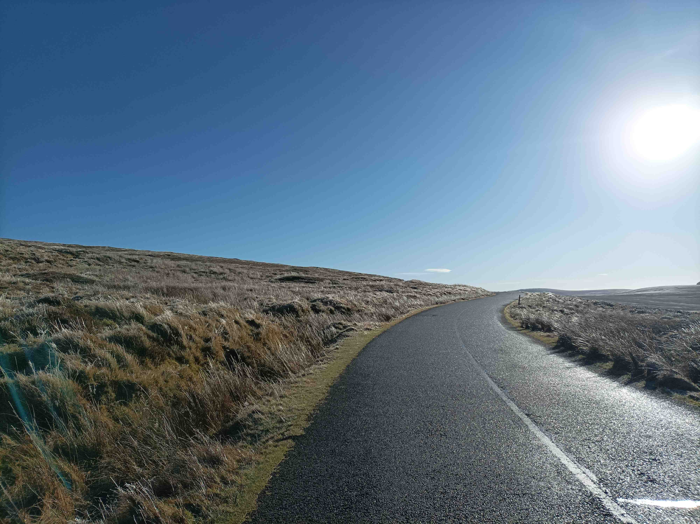
I’m getting cold now with all the standing round so I push on towards the open mountains and I hope the road is clear of ice. The first few hundred metres are through one of those evergreen deserts, and the trees block the light and prevent the ice from melting. Soon they fall away and it’s open bog all round. The roads are clear but the grass is white with ice, the sky is California blue, and the sun is blindingly low. It’s incredible. I’ve seen this place looking variously green and yellow or purple and red, and I’ve even seen it burnt to a black crisp, but now it’s long white streaks of ice diagonalizing out of the ground. I go round the bend and as I look back, I see the grass is all yellow. The sun has melted the ice on the south side of the grass but not the north.
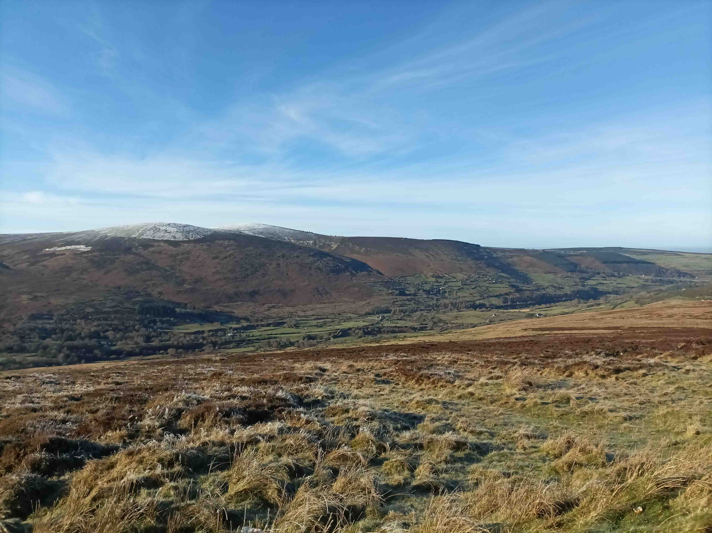
I keep my momentum to get to the top before stopping to take more snaps, and on the descent I barely recognise where I am from how different the landscape looks, so my recognition has to come from my familiarity with the curves and slopes on the road, which itself seems narrower and more cracked up than normal. There’s a graveyard of trees now and each narrow stump has a plastic domino erected beside it. Then there’s a sign saying the Sally Gap might be inaccessible in winter and here’s an easy road left to Enniskerry, but I’m in no mood for half-arsery, nor for that fast straight descent down to the waterfall, so I punch on and I’m actually glad there’s another hill to climb now because I’m so cold that I need the hardship of climbing to warm me back up. This climb always looks less steep than it really is because it’s open and roads always look steeper when there are trees or stepped houses to highlight the hardship. I end up having to get off the bike at one point because it’s too difficult for me. Or, more accurately, I’ve gone into the red because I’ve misjudged the difficulty. Or more accurately again, I’ve gotten off the bike so many times now that stopping due to pain has become a legit reason to rest. And that’s yet another problem with taking snaps en route. It banjaxes your cycling rhythm and it takes your head out of the game, and your mind doesn’t get to go deep inside itself, either by accident, cos you are in the zone, or by design, as in this case, because you need to go to the well just to keep going.
That to me is the greatest beauty of climbing, getting access to the well of experiences inside you, because as your legs struggle and your body says no, your mind thinks of something painful from the past – which you overcame – and you can use that as motivation to keep going. And now the current physical experience can get added to the well, so that the next time something is equally hard then you don’t need to rely on emotions, cos you’ve got the bodily memory to refer back to. It is literally like D’yeh remember the time you were on Kippure and you kept going? And that memory tells you that you’ve done this before and you can do it again. When I started cycling first I had to think back to rugby training, cos that was the only relevant experience I had had. The pain of the training drills were similar to this new pain of cycling. Paul O’Connell used to always talk about going to the well, but he was talking about doing in the middle of a match, which is something I find odd, because I find rugby too fast-paced to have time to think back in your memory. I need slash love the slowness of cycling pain to help me go there. My goal is not to find the limits of my physical capabilities, but to understand the limits of my own inner self. To know who I am and how I was shaped.
6.4 Sally Gap
It turns out I have become someone who stops on the side of a climb to take photos. I time my rest to coincide with a parking spot used by drivers to view Lough Brae, with it’s steep rocky walls making it look like a big mixing bowl filled with black water. There is no one foolish enough to brave this freezing bowl of water today although I’ve often thought this’d be a fun place to hold a triathlon. Swim in this lake, cycle the roads and run around the gorse. I must start hiking out here too and get a different view on these hills. After all, this is a massive national park which is still underappreciated. Everyone knows about the West of Ireland but Wicklow is just as beautiful and, if hiking was your job, you could easily commute here daily from Dublin city centre.
I push on up the last of the pass between Tonduff and Kippure, and then the land plateaus for a few clicks along The Sally Gap. Thankfully there’s no wind today and the climb has my blood back moving. It can be devilishly cold up here, even with much higher temperature. Bizarrely, a fella pulls up on the road in front of me and whips out a big pro camera and I give him a photobomb wave, but he actually flags me down. It turns out he’s a freelance photographer – by the name of Damien Eagers – and he asks me to double back and go again for a better shot. He takes my name and tells me he’ll be sending photos into the newspapers and I wonder how they’d feel about the worst equipped cyclist in Ireland out slugging through icy roads. l push on, wishing I’d told him about my lighthouse trip, and then I stall on again at the exposed crossroads, where the Old Military Road, which I’m on, meets the road up from Blessington slash Manor Kilbride. This spot functions as a great endgoal in your mind but it can be a rough stopping point on a windy day cos there’s no shelter. I’m trying to take arty photos of my bike at the toppled signpost and then Damien reappears, and we have a proper chat this time. Before I bounce, he gets me to do another looparooney so that he can get Kippure in the background, with its snow and big fukov TV mast,
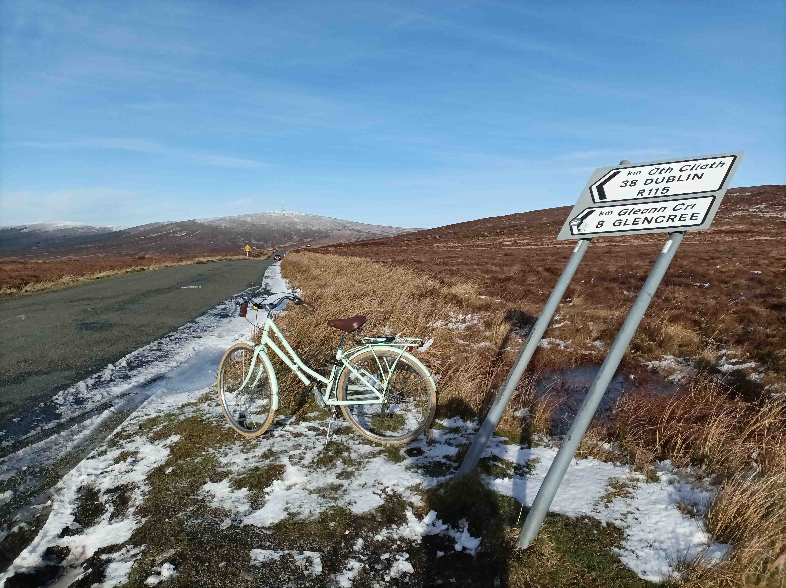
6.5 Guinness Time
The road goes right for Glendalough and the Wicklow Gap, but I turn left for the Guinness Lake and Roundwood. This is less familiar territory now cos I’d usually swing around at the Sally Gap, descending towards Brittas. It’s handy enough this way too as it’s mostly downhill, and I just have to be careful to dodge any ice, which only crops up whenever coniferous trees have blocked the light. I stop off to look at the black and white lake and its teeny private flat valley. It’s like looking at the past from above, when Ireland was divvied up into estates, with peasants out of view and aristos having afternoon tea in the gazebo. Some member of the Guinness family owns or used to own this land and I remember that I must pick up Paul Howard’s book about your man from this branch of the family whose death was documented in The Beatles’ song A day in the Life.
I want to know more about the Guinness family because I was friends with Patrick Guinness in the bizarre boarding school we both went to as kids, but I haven’t seen him since I was ten, when he was old enough to move on to secondary school somewhere. His mother, Marina Guinness, was the kindest of souls and she’d rescue foreign kids for the weekend, as they would otherwise be locked up in school for three whole months at a time. Presumably she felt a lot of conflict between feeling sorry for the individual kids and the aristocratic habit of sending their eight-year-olds off to be raised by gangs of nine, ten, eleven and twelve year olds. I saw Marina intermittently down through the years as she used to buy her chicken feed in my dad’s shop, although unlike most customers she’d be more interested in hearing about us, rather than unloading their latest goss or their dog’s hardships. I last saw her in the Indo a few years back, being interviewed about the band Kíla over practising in her gaff. The presence of such people in my childhood gave me a glinting awareness of a rock’n’roll world which never seemed to seep beyond this Hidden Ireland of castles and estates. Paddy Guinness’s dad was the drummer from The Police, Stewart Copeland, but he was off in America, and poor Paddy had to learn the drums from our music teacher in school, who definitely wasn’t Rolling Stone magazine’s tenth best drummer of all time.
Bar a few very close friends, I mostly lost touch with that world when I went to secondary school. Yet somewhere in amongst it all I picked up a chunk of the Anglo-Irish insouciance, as they seemed to live in a parallel world to the rest of the country, with life ousting work as the primary life motivation. In secondary school I never felt at ease with the workaday world of respectable jobs which characterised its hard-working, well-salaried Catholic families. I feel I need to go and find those people I grew up with in primary school and learn about them and the mad world we were reared in. Every so often I meet one of them on the rand and the familiarity is like meeting a person from an island you grew up on but can never go back to. There’s a photo of us all in 1993 and it’d be a very cathartic project to find and interview them all and write a book about it.
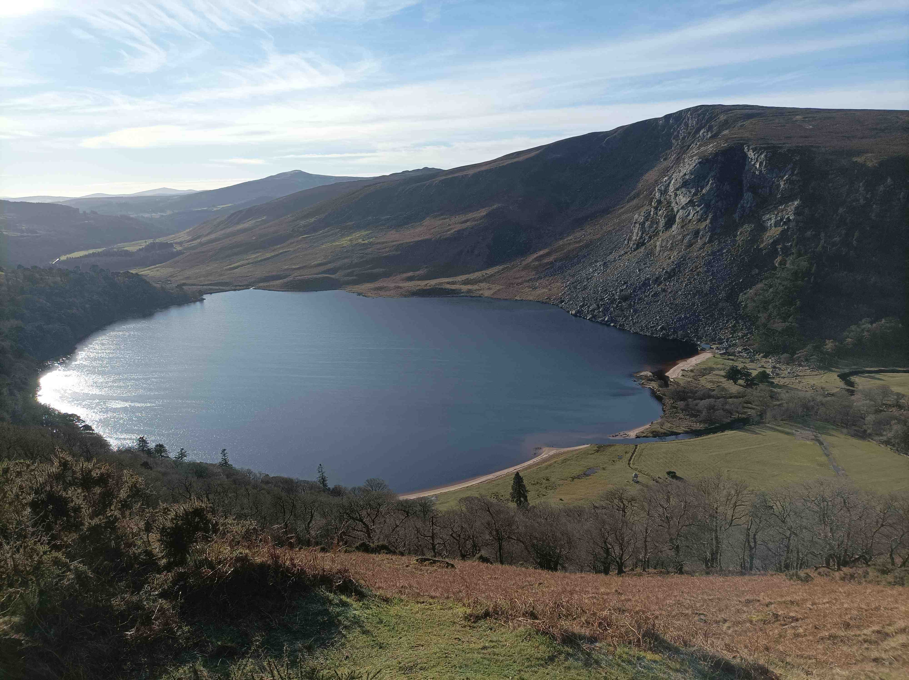
After Luggala, the descent transitions from mountain bog to farmland and I emerge on a busy one-way rural road that is the worst kind to cycle on. Cars zip by at the limit slash recommended speed of eighty clicks a Paddy, and when you’re not getting overtaken at breakneck speeds, then you’re in a tractor’s cavalcade, rubbing wing mirrors with filthy farmer jeeps. It’s only 3k to Roundwood so I stick it out and I’m curious to check out this village, seeing as I’m kind of on a mish to scope out South Wicklow as a viable and affordable place to buy a house and live. Instead, I listen to Google Maps and a rare pedestrian who both guide me left towards Ashford just before the village of Roundwood emerges. I know I’ve missed a beat cos I remember me and Mono stopping here for a carvery nearly ten years ago and watching Jimmy Gopperth missing a last-minute dropgoal by a cunthair, preventing a particularly unmemorable Lonster team from reaching another Heineken Cup Final. Such are the hashtag margins. But as I say, I’m on a mish to check out a few villages and this is the one I’m least interested in, being a piece of the midlands which has leaked into The Gorden County.
It turns out that the Wicklow Mountains are not quite parallel to the coastline, and Roundwood and its lakes lie in a bit of a plateau between the mountains proper and a harmonic overtone of hills through which I’m about to pass on my way to the coast. For a few clicks, I’m back in the Ireland I’ve never had much interest in. Lumpy fields and nothing happening. Many people think this is idyllic and I can even see why Kim and Kanye took their honeymoon in Offaly, but to me it’s just livestock and jeeps, an outdoor factory for churning out nosebag, and we’re not welcome, unless you are on tea-drinking terms with the farmers. From the viewpoint of someone squashed into a shitbox duplex in the burbs, it’s an inefficient use of our beautiful country, and I wish we could find a better way of divvying up the land between the need to accommodate people, the need to produce food, and the often forgotten need to reforest the island’s natural habitat for the poor bastids who got turfed out.
Soon I’m back on hillier terrain, with equestrian centres replacing the sheep farms, and suddenly the coast reemerges in the distance, reminding me that I might soon reach this lighthouse. The hard work is done and this trip is now about exploration, looking at housing developments and getting the lay of the actual land. I’ve been running the numbers and it looks like the best value in the country remains in South County Wicklow, where, for less than possibly 400k, you can still find that magic mix of the sea, the mountains and maybe even some community for my kids.
6.6 Ashford

As I arrive in Ashford I’m greeted by New Homes on both sides. I recognise the name of one of the developments and go in for a quick spin and there’s about a hundred cookie-cutter Roisin Gaffneys with a block of young grass in the middle. I want to cycle round the path at the back but the pavement is five or six inches off the road, and I can immediately see how this will be a problem for kids cycling round. It’s not a dealbreaker of a problem but it’s the sort of detail which shows how little care goes into making housing estates habitable for when you’re actually like there?, which the owners mostly won’t be, as they’ll both be off in work for three decades getting cash to pay for it. I feellike I need to do a tour of the world before I come to understand how it ought to be done, but I’m a hundert percent sure we’re doing it wrong in Ireland. Nearby is another development but each house has an upside down cross under the gable roof at the front and I feellike I’m in a horror movie in the Deep South. I make my way down to the village via some roadworks and I’m delighted to see that these developments are only a five minute walk from the village, exactly how I like to live.
I see a charity shop and I go in and buy myself a light fleece-jumper for a fiver and it warms me up goodo. The lady’s accent is very posh but not quite West Brit and I’m like this is going to be interesting. I go in to the cafe next door, The Hen and Hog, and I quickly clock that this is a two-accent village, like Dublin city but miniscule, and the name of the cafe kinda describes this. One accent dates back to the medieval English brought here by the Normans and this is only spoken by bonafide locals, of the right – or wrong – background. In Dublin, they are condescendingly called Real Dubs, although to me that sounds aspirational, seeing as I couldn’t name a single distant relative born in the other thirty-one counties of Ireland. But my people don’t come from the old city centre. Then you’ve got your West Brit accent which came in centuries later and modern blow-ins develop gradations off that. In Dublin that has ended up as the D4 accent among younger people, but I’m not sure if it’s as uniform among the older generations. The lady next to me is telling her lunch companion about lahst week when she went awf shopping in Dun Laoghaire, and meanwhile the waitress is saying sarry she took so lo-ong, it’s only her first da-ay, in that down-to-up accusing tone that Real Wickla people have. I must go back and see what Hickey has to say about these East Coast accents in Dublin, Wicklow and Wexford.
Ashford looks like an AK village to live in. Enough going on to keep you fed and watered and the kids in school, but definitely not a town. By the time I leave, it’s school collection o’clock and there’s a logjam of traffic. My sister afterwards explained that there’s feck all infrastructure down here to cope with the growing numbers. Even the train timetable is a jake. This morning, I had hoped to make it home on the 2:45 train from Wicklow Town, but if I miss that, and I will, I’ve gotta wait til the 7:15 train back to Dzublin. On a day like today, that’s a cheeky excuse to faff about. But it’s a black mark against the place being a viable place to live.
6.7 Rathnew and Wicklow Town
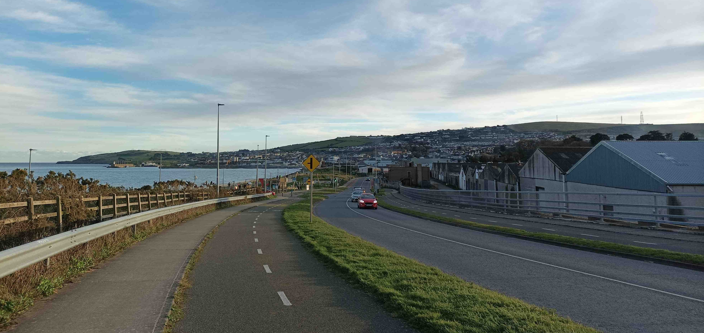
The road to Rathnew and Wicklow town is nothing to write home about unless you want another traffic report, although I seem to have blinked and missed Rathnew as I see a big graveyard which means I must already be on the outskirts. The map says the sea is on my left but it’s blocked off by a narrow lough and a peninsula slash barrier island in parallel. To the right is a long hill, stencilled with ineluctable houses not worth looking at, although I’d say many of them are decent to look out of. I pop into a sizeable development of new houses, Tinnakilly, which fills in a hilly gap between the road and the sea, but it screams amenity desert, like most new developments.
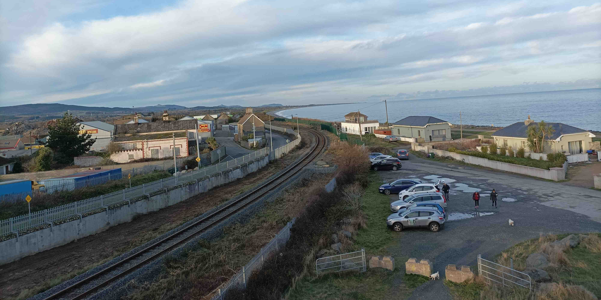
There is a bike lane now though, so I veer off left to cross the lough and it’s a click or two into town. The peninsula is a post-industrial shitpit but a less scaldy promenade appears, full of walkers and scraps of amenities such as playgrounds and a dogpark, with gastro pubs hanging out the end of it. It’s immediately clear that I’m cycling along the future of this town, but there’s not a crane in sight and you could still host a cheeky rave in the disused warehouses. I’d say the Craig David lockdowns were the best thing to ever happen this place and that it was rammed with takeaway pinters in the summer of 2021, with the only downsides being the presumably breeze and the hill to the west knocking off a solid hour of evening sunshine. This place reminds me of La Manga in the south-east of Spain, a skinny strip of land which has recently been filled with condos and clubs. There’s no reason why this town couldn’t become a getaway town for Dublin, and a better train would zip you up and down in forty minutes. Like if the Victorians were stalling it out to Bray for the avo, then we should be buzzing down here. And if they are plonking low density housing in the greenfields on the edge of this town, forty-five road-laden minutes walk from the town, then they ought to be sticking high density housing here in the brownfields, right on the sea, a few minutes walk from town along the promenade.
Down near the harbour, I cross a tiny bridge back into the town centre, and I eke my way through some side streets and up onto the main street. It looks like the town is transitioning into a genuine hangout space, with the likes of Nick’s Coffee having reclaimed some roadspace for its clientele, and a few more micro-piazzas having great potential, but I can’t help but feel that this town, like so many in the state, have suffered the deleterious effect of being left to the natives for a century. I pop back down to the harbour, which is still a live workspace with timber waiting to be loaded onto a ship and not a whiff of tourism around. For the sake of exhaustiveness, I take the short walk down to the scutty lighthouse at the end of the pier. I hadn’t seen it on Wikipedia’s List of Lighthouses in Ireland. There’s a Norman castle somewhere here too and some explanation of the history and purpose of the town, but fish and fortification is good enough for me and I leave the castle for my next visit, with the kids next time, cos this place is a diamond in the rough. The whole town is a bit of work-on but the potensh is yooge.
6.8 Trespassing
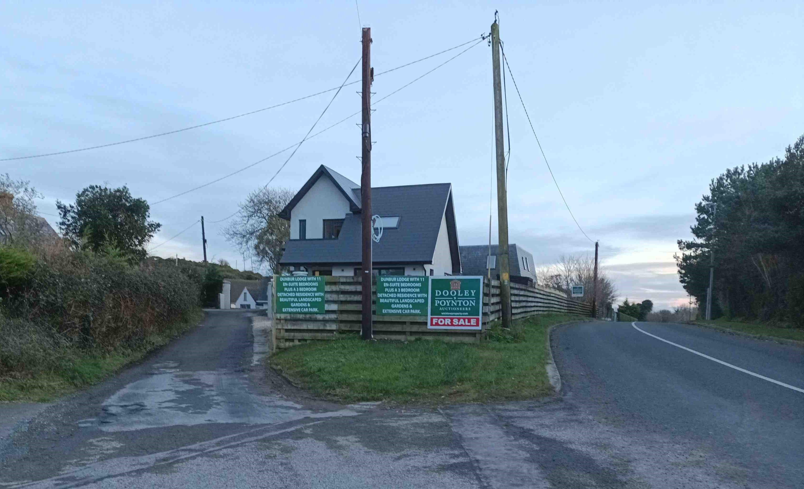
It’s three or four clicks from the town to the main lighthouse, past a tidy golf course and then down a boreen off the main road. I’m only following Google Maps and haven’t done my obviously research, so I’m pretty shocked to find notices saying that the road is private. There’s a couple of houses and I hear someone about to leave the gaff with a few dogs so when she comes out I ask her the Jacques Chirac and she says it’s grand, that there’s a grumpy farmer who is always moaning about the gate being left open. I feel like a criminal all the same but I’m relieved to see a few Spanish tourists out taking selfies and when I get to the gate I just open and close it like the wide basically door that it is. I now feel like a kid sheepishly retrieving his football from a neighbour’s garden. There’s yet another gate on the way to the lighthouse, with CIL welded into it and only later do I learn that this means Commisioners of Irish Lights, so I no longer need to be worrying that said farmer is coming out with a shotgun. But I still am. Unlike a lot of Irish people, I don’t have a well of trespassing experiences to draw upon in order to help me through these nerves.
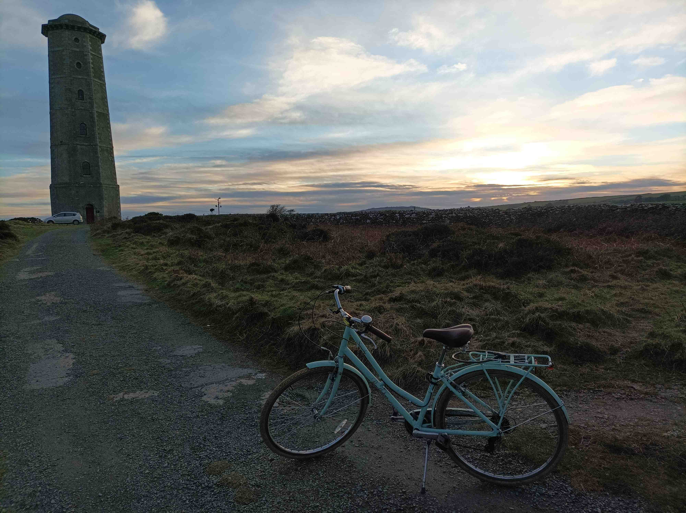
It turns out that there are three lighthouses here. The working lighthouse is on a lower knob of land jutting out of main headland and to get there you have to descend a few steep hairpins. It’s your classic lighthouse, complete with red and white paint, and a house adjacent for the erstwhile lighthouse keeper and family. The views from here are quite poor, by the high standards of the genre, so you can only look 180 degrees out to sea, maybe less in fact, and to some pointy cliffs which you’ll want to avoid if you’re on a boat. This is the Eastmost point of Leinster and you’d really want to be here in the morning for sunrise. This is the sort of detail I didn’t appreciate until I started voyaging out to these plantless, barely habitable places.
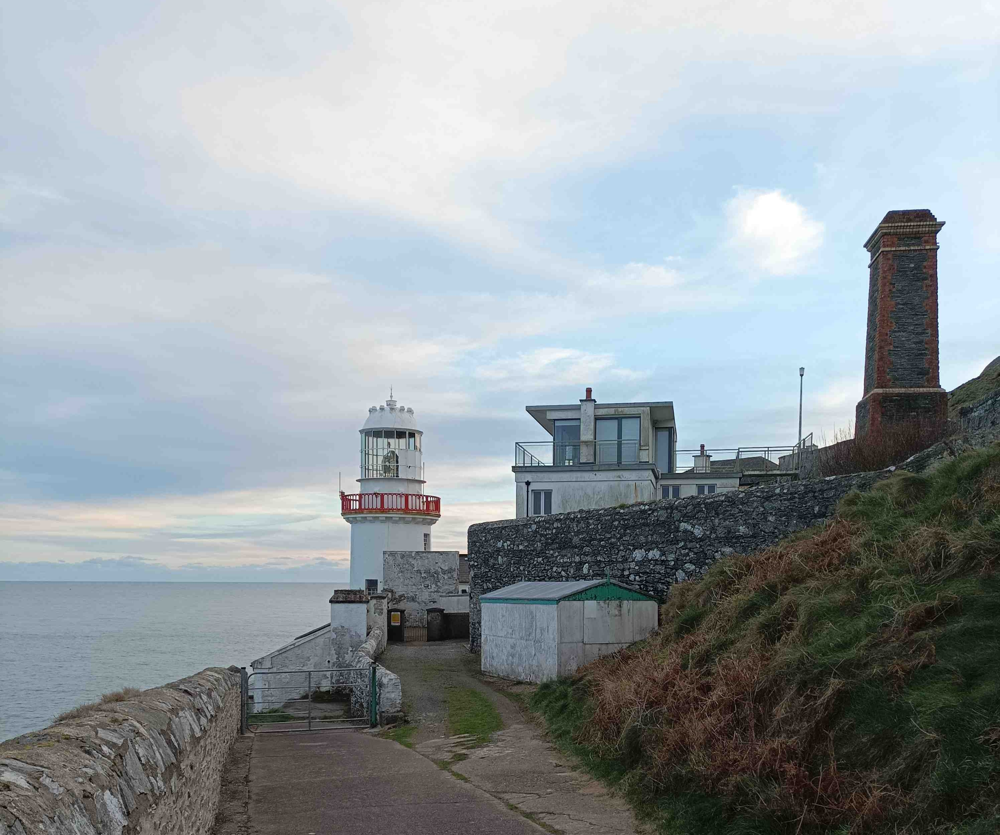
On my way down is a father and son combo, obvious from their matching gaits, but I’m not sure if they live here or are just visiting. The dad looks out towards the cliffs and the son pops down under the gap in the gate to go and have a moment to himself on the far side of the wall. I get yapping to him after and he tells me a bit about the battle between the farmer, who owns the land, and the I think council who the road. He’s the kind of lad you would seldom find in any other county, with a Druid’s goatee so thick and long that it’s hard to see his lips and whenever I struggle to understand his accent, then my only back-up is to tongue-read his speech. The lads bounce and I hang around to take photos and savour my disappointment.
I’ve come a long way and don’t yet appreciate the importance of the site. The other two towers were also lighthouses in their day, lit by candles and mirrors, and dating from an earlier era when refractive lenses had not been invented and only a handful of lighthouses were present on the Irish coast. I don’t hang around long to work out the situation because the sun is setting and I need to cycle back into town before dark.


6.9 Coda
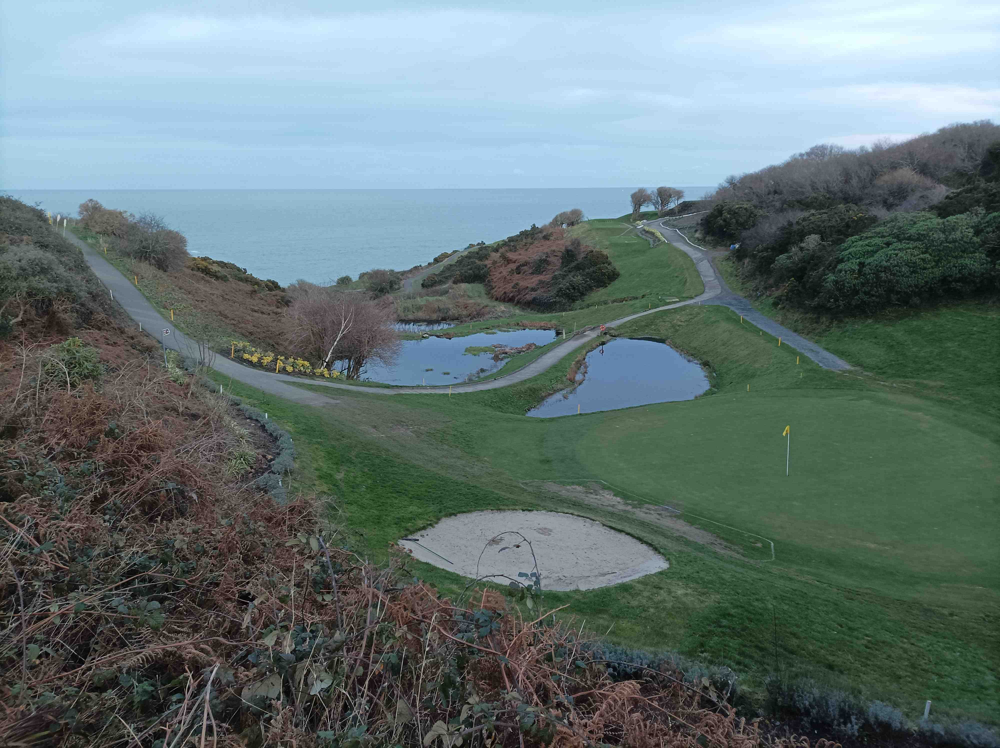
It’s a long way home from here and the train isn’t for another two and a half actual hours. On the way back to Wicklow Town, I stop to look at a tiny valley which has been manicured into a beautiful green by the golf club, and it’s a chance to reflect on how mankind can turn the most unfarmable land into something useful and beautiful. I can’t believe I’m saying this, but I feel that golf courses might be world leaders in turning Ls into Ws, along with Japanese gardens. Every beach in Ireland has a golf club hanging out the back of it with sandy dunes converted into pure recreation. It’ll be interesting to see how land gets developed in the future as more people live in tighter spaces and need more resources. It looks like Wicklow has begun the process of sprucing itself up but a lot more vision and investment will be needed to transform its coastline so that it becomes a day trip resort, and no doubt this lighhouse complex could do with a visitor centre too. I stall the ball in the town, pop in for a chat with Eugene the Estate Agent and we both agree that the town is the place to live, not off in one of the new developments. He’s off for a scoop in Tá Sé’s, a real pub, while I pass the time in The Brass Fox, an empty gastro pub. In squareness, it is a Monday in the middle of January, and there is at least a ukelele class on in the background to take the edge off the cavernousness. Waiting for the train home I get yapping to a Ukrainian lady who has come to Ireland for a five-day holiday. She arrived today and, for reasons she hasn’t got the English to explain, she has come here. Her face screams disappointment but I feel hopeful. On the train I the talk bikes and mortgages with a bike shop mechanic who has to work 11-7 because of the train skedj and I just hope to Christ that the right people get on the case and turn this town into the special place it clearly could be.